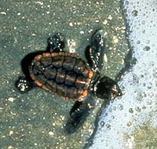

Sea turtles (Lat. Chelonioidea), Turtles Row. Contains 1 family of sea turtles (Cheliniidae). They are adult animals, they spend their whole lives in water. They come to land only to lay eggs. low Armor Have. They cannot completely penetrate the armor. Limbs are turned into fins. The forelimbs are long. The abdominal shield is separated from the dorsal shield. They are common in tropical and subtropical seas, rarely in the temperate zone. There are 4 genera per species. Sea turtles travel hundreds of km to places favorable for food and reproduction. They lay several dozen to 200 and sometimes more eggs. Green turtle (Chelonia mydas) — is the largest. Their armor length reaches 1.4 m, weight up to 400 kg. Feeds on algae. It has delicious meat and Egg.
